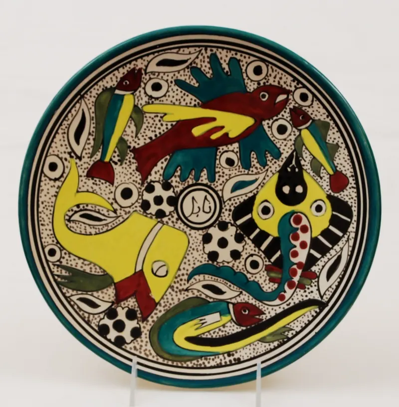
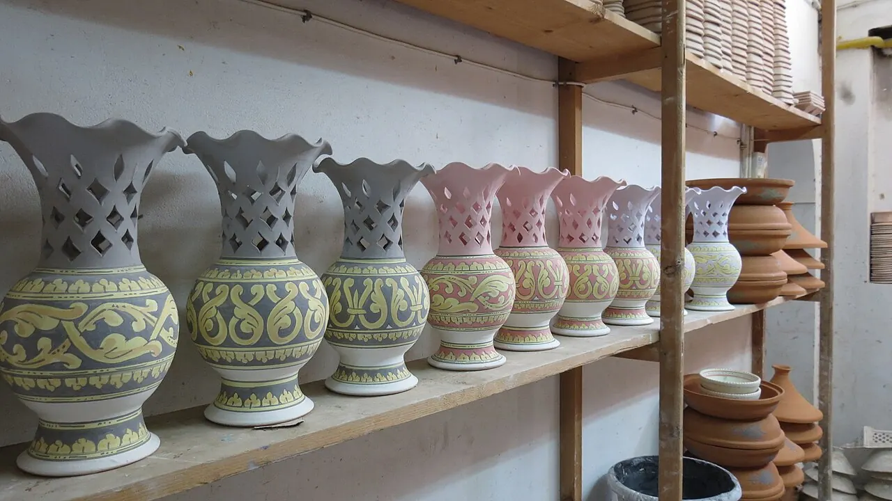
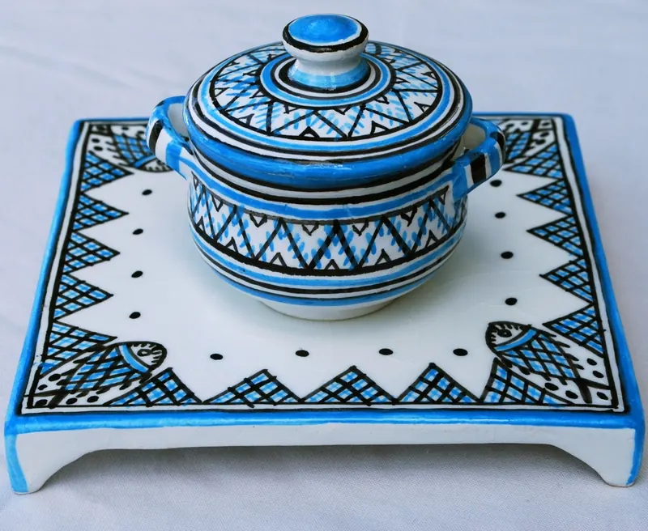
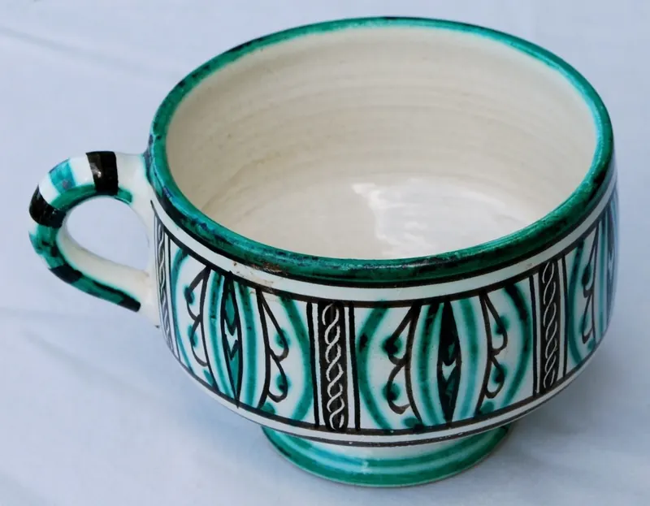

Vaisselle du quotidien
Assiettes, bols et tasses émaillés, compatibles lave-vaisselle.
À partir de 25 TND
Céramique artisanale · Nabeul
Vaisselle, pièces décoratives et commandes sur mesure, tournées et émaillées dans notre atelier. Venez aussi apprendre le tour lors d'un cours d'initiation.

Terre & Bleu est un petit atelier imaginé pour cette démonstration. Il représente le type d'entreprise locale qui a besoin d'un site simple : présenter son savoir-faire, répondre aux questions fréquentes et recevoir des demandes.
Chaque pièce est tournée, séchée, puis cuite deux fois. Les émaux bleus et blancs rappellent la tradition potière de la région.
Quelques familles de pièces. Les prix sont fictifs et donnés à titre d'exemple ; les photos montrent des céramiques réelles de Nabeul, à titre d'illustration.

Assiettes, bols et tasses émaillés, compatibles lave-vaisselle.
À partir de 25 TND

Vases, plats de service et carreaux peints à la main.
À partir de 60 TND

Services complets pour cafés, restaurants et maisons d'hôtes.
Sur devis
En petit groupe, tout le matériel est fourni. Prix fictifs.
70 TND / personne
180 TND / personne
Sur devis
Vous pouvez aussi poser votre question à l'assistant, en bas à droite de l'écran.
Une commande, un cours, une question ? Écrivez-nous, nous répondons sous 48 heures ouvrées.